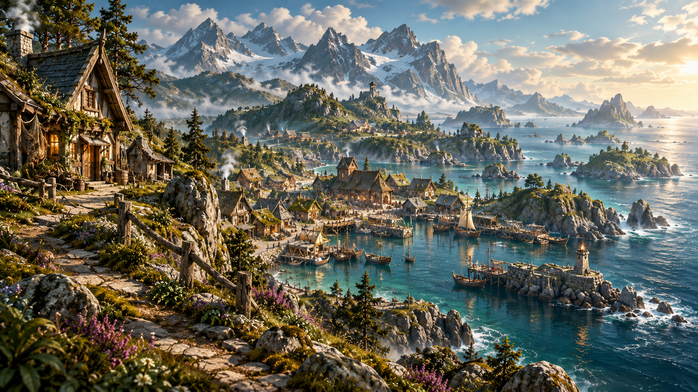

THE GREEN KINGDOM
Taurniel
Green hills, misty moors, deep forests, and fertile lowlands stretch across a realm of feudal baronies loyal to King Laurenal in Tiergard.
Beyond its walled townships lies Thuburabe, a great city built around a towering ziggurat housing temples to every known god of Thulohm.
KINGDOM · CAPITAL: TIERGARD